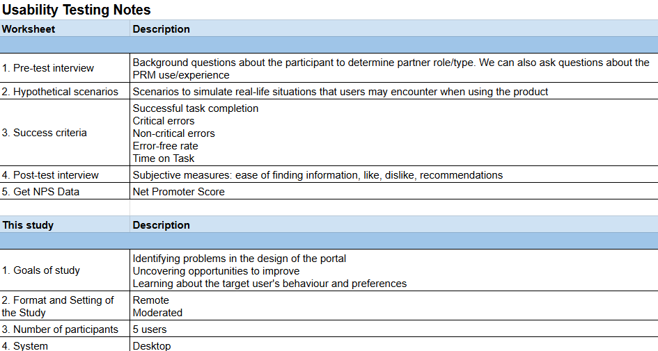
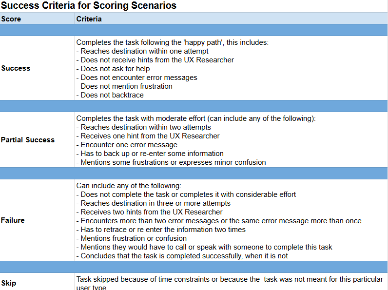
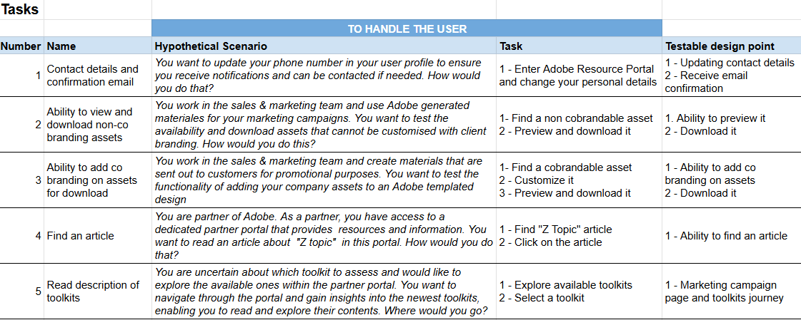
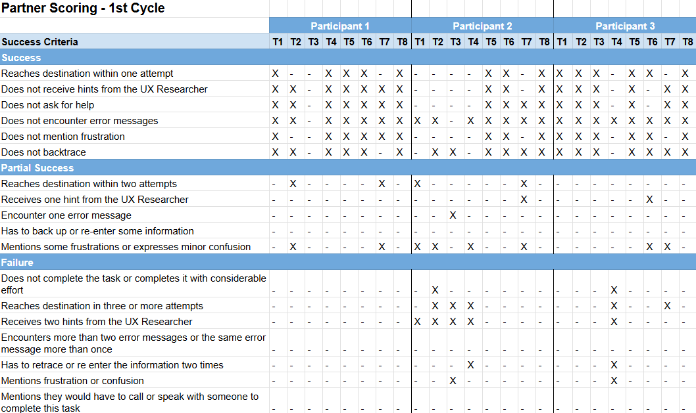
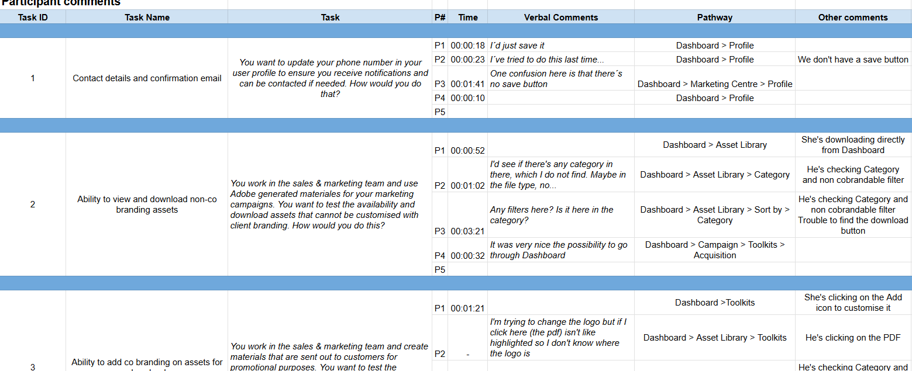
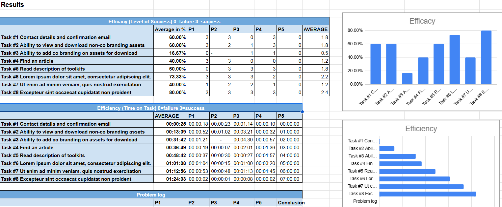
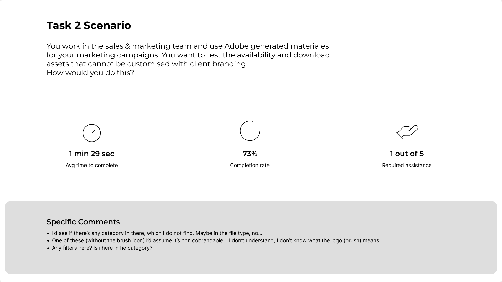
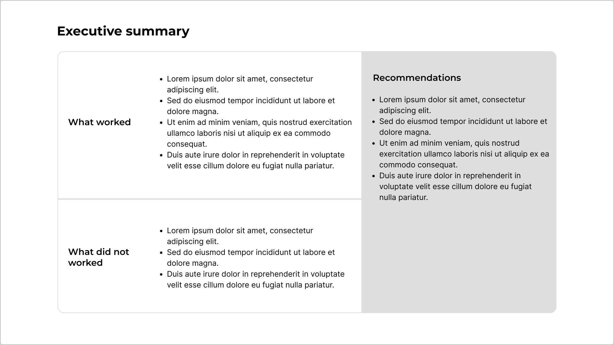

From Zero to Insights: PRMs Research Program
Transforming partner relationship management through evidence-based research and actionable insights.
Overview
The PRM Program was designed to uncover key insights into how partners interact with Adobe products,
identify pain points, and inform product decisions that drive engagement and satisfaction.
This program was designed for Adobe to enable their clients to share marketing assets with their own customers,
provide visibility into deals and their status, and simplify the communication of updates and news, particularly
during campaign heavy months such as Christmas and New Year.

My Role
I led the end-to-end research process, from scoping objectives to recruiting participants,
executing interviews and usability testing, and synthesising findings into actionable recommendations.
My primary responsibility was to act as a communication bridge between the PRM provider and Adobe.
On one hand, I collaborated with the PRM vendor using technical terminology and by reviewing the backend code of the system.
On the other hand, I worked directly with Adobe to understand their user-facing needs,
clarifying what could or could not be achieved within the PRM's capabilities.
Once we aligned on goals and defined what was feasible, I recruited participants and test the program.

Usability Testing Process
Overview
A high-level representation of the usability testing structure and flow.
Success Criteria
The specific goals defined to measure whether the usability test was effective.
Tasks
The list of tasks participants had to complete during the test.
Partner Scoring
Rating scale used by partners to evaluate their experience.
Participants Comments
Qualitative feedback directly collected from users during testing.
Results
Consolidated findings based on the tasks, success criteria, and feedback.
Conclusions
Key takeaways and next steps summarised for stakeholders.
 Likert Scale Evaluation
In addition to interviews and usability testing, I designed and ran a short Likert scale survey to capture quantitative insights. Participants were asked:
- “How satisfied are you with the PRP?”
- “Why did you give this score?”
This allowed us to measure perceived satisfaction, identify gaps between expectations and experience, and validate qualitative findings with numerical trends.
Outcomes & Impact
- Improved partner onboarding flow
- Enhanced platform usability
- Higher engagement and satisfaction metrics
- Evidence-based prioritisation of new features

Key Learnings
Through this program, I reinforced the importance of continuous discovery, clear communication with stakeholders, and translating research into actionable product decisions.